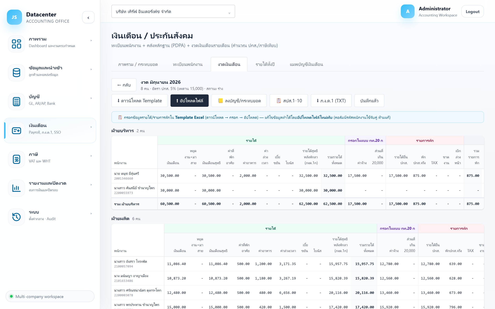
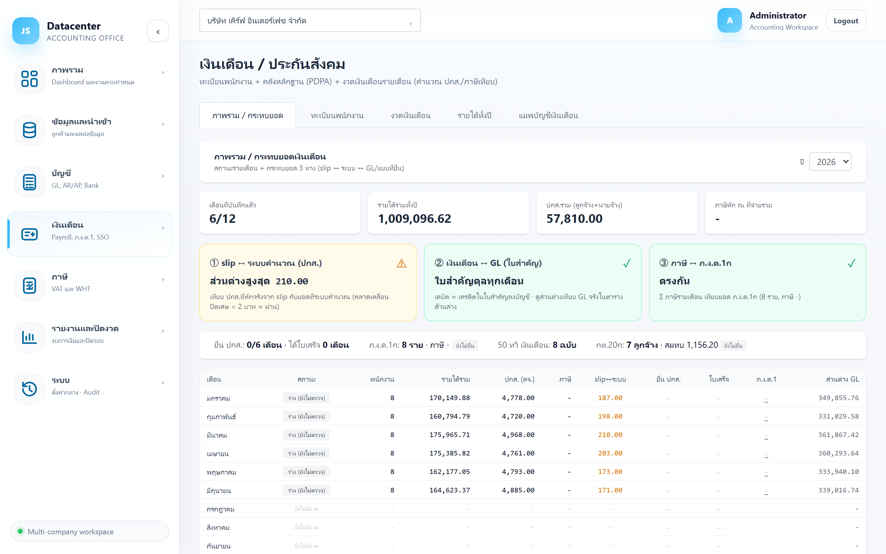

ประกันสังคม (สปส.1-10 / กท.20ก)
นำส่งเงินสมทบประกันสังคมรายเดือน (สปส.1-10), แบบเงินค่าจ้างประจำปีของกองทุนเงินทดแทน (กท.20ก), การแจ้งเข้า-ออกพนักงาน และการตั้งอัตราเงินสมทบที่ใช้คำนวณ
เมนู เงินเดือน → ประกันสังคม เปิดหน้าเงินเดือนแล้วเด้งไปแท็บ งวดเงินเดือน ให้เอง เพราะแบบ สปส.1-10 ออกจากงวดของเดือนนั้น
นำส่งเงินสมทบ ภายในวันที่ 15 ของเดือนถัดไป · กท.20ก ยื่น ภายในเดือนกุมภาพันธ์ ของปีถัดไป
1. แบบ สปส.1-10 (รายเดือน)
- เปิดเมนู เงินเดือน → ประกันสังคม (ไปที่แท็บงวดเงินเดือนให้อัตโนมัติ)
- กด เปิด ที่งวดของเดือนที่จะนำส่ง
- กดปุ่ม 📋 สปส.1-10 ที่แถบด้านบนของงวด

สิ่งที่อยู่ในแบบ
| ส่วน | รายละเอียด |
|---|---|
| เลขที่บัญชี | เลขที่บัญชีนายจ้างที่ขึ้นทะเบียนกับ ปกส. — ดึงจากข้อมูลบริษัทที่ เมนูลูกค้า |
| ลำดับสาขา | ลำดับที่สาขาตามทะเบียนประกันสังคม |
| อัตราเงินสมทบ | อัตราที่ใช้คำนวณของงวดนั้น (ดูข้อ 4) |
| ตารางผู้ประกันตน | ลำดับ · เลขประจำตัวประชาชน · ชื่อ-สกุล · ค่าจ้าง · เงินสมทบ — พร้อมยอดรวมท้ายตาราง |
| สรุปยอดนำส่ง | เงินค่าจ้างทั้งสิ้น · เงินสมทบผู้ประกันตน · เงินสมทบนายจ้าง · รวมนำส่งทั้งสิ้น |
| แบบที่ยื่น / ใบเสร็จ | ช่องแนบไฟล์หลักฐาน — แนบแล้วจะขึ้น มีไฟล์ (ดาวน์โหลด) |
เฉพาะพนักงานที่มี ค่าจ้างยื่น ปกส. ในงวดนั้น — ถ้าขึ้นว่า “ไม่มีผู้ประกันตนที่มีค่าจ้างยื่น ปกส.ในงวดนี้” แปลว่าในงวดยังไม่ได้กรอกช่องฐานยื่น ปกส. ให้ใคร
2. แบบ กท.20ก (ประจำปี)
แบบแสดงเงินค่าจ้างประจำปีของ กองทุนเงินทดแทน — คนละกองทุนกับเงินสมทบรายเดือน
- ไปที่แท็บ รายได้ทั้งปี (เมนู ภ.ง.ด.1 พาไปที่นี่)
- เลือกปี แล้วกดปุ่ม กท.20ก
- ตรวจยอดแล้วบันทึกสถานะที่ปุ่ม สถานะ กท.20ก
กท.20ก ใช้ค่าจ้าง ไม่เกิน 20,000 บาท/คน/เดือน — ในตารางรายได้ทั้งปีจึงมีคอลัมน์กลุ่มสีม่วง “กรอกในแบบ กท.20 ก” แสดง “ค่าจ้าง” และ “ค่าจ้างส่วนที่เกิน 20,000” แยกไว้ให้แล้ว
3. การแจ้งเข้า-ออกพนักงาน
บันทึกอยู่ในฟอร์มพนักงาน (แท็บ ทะเบียนพนักงาน → แก้ไข) ส่วน “การแจ้งเข้า-ออก ประกันสังคม”
| รายการ | ใช้เมื่อไร |
|---|---|
| แจ้งเข้า | เมื่อรับพนักงานใหม่และแจ้งขึ้นทะเบียนผู้ประกันตนกับ ปกส. แล้ว |
| แจ้งออก | เมื่อพนักงานลาออกและแจ้งสิ้นสุดความเป็นผู้ประกันตนแล้ว |
ระบบไม่ได้ส่งข้อมูลไปที่ ปกส. ให้ — เป็นการบันทึกไว้ว่าทำแล้ว/ยังไม่ทำ เพื่อไม่ให้ลืมและตรวจย้อนหลังได้ว่าแจ้งเมื่อไร
ช่องที่เกี่ยวข้องในทะเบียนพนักงาน: เลขผู้ประกันตน และ โรงพยาบาล ปกส.
4. อัตราเงินสมทบ (ค่ากลางของสำนักงาน)
ตั้งที่เมนู ระบบ → อัตราเงินสมทบ ปกส. — เป็นค่ากลางใช้กับทุกบริษัท และเก็บเป็นชุดตามวันที่มีผล
| ช่อง | ความหมาย |
|---|---|
| มีผลตั้งแต่ | วันที่เริ่มใช้อัตราชุดนี้ — ระบบเลือกชุดที่ตรงกับงวดให้เอง |
| ปกส. ลูกจ้าง % | อัตราเงินสมทบฝั่งลูกจ้าง |
| ปกส. นายจ้าง % | อัตราเงินสมทบฝั่งนายจ้าง |
| ฐานค่าจ้างต่ำสุด / สูงสุด | ช่วงฐานค่าจ้างที่ใช้คำนวณ (เพดานเงินสมทบ) |
| กองทุนทดแทน % | อัตราเงินสมทบกองทุนเงินทดแทน |
| เพดานกองทุน/ปี | เพดานฐานค่าจ้างต่อปีของกองทุนเงินทดแทน |
| หมายเหตุ | บันทึกที่มา เช่น เลขที่ประกาศที่ปรับอัตรา |
ช่วงที่มีมาตรการลดอัตราเงินสมทบ ต้อง เพิ่มชุดอัตราใหม่พร้อมวันที่มีผล (ไม่ใช่แก้ทับของเดิม) — ไม่งั้นงวดเก่าจะถูกคำนวณด้วยอัตราใหม่และไม่ตรงกับที่นำส่งจริง อาการที่จะเห็นคือ กล่องกระทบยอด ① บนแท็บภาพรวมเปลี่ยนเป็นสีเหลือง
5. ติดตามว่ายื่นครบหรือยัง
ไปที่แท็บ ภาพรวม / กระทบยอด ของเมนูเงินเดือน

| ป้ายสถานะ | ความหมาย |
|---|---|
| ยังไม่ยื่น | ยังไม่ได้บันทึกว่ายื่นแบบ |
| ยื่นแล้ว | บันทึกว่ายื่นแล้ว แต่ยังไม่มีใบเสร็จ |
| ได้ใบเสร็จ | ยื่นแล้วและแนบใบเสร็จเรียบร้อย — สถานะที่สมบูรณ์ |
6. ลำดับงานประกันสังคมประจำเดือน
- ตรวจงวดเงินเดือน ของเดือนนั้นให้เรียบร้อยก่อน (ดู เงินเดือน)
- เปิดแบบ สปส.1-10 ตรวจรายชื่อผู้ประกันตนและยอดรวมนำส่ง
- นำส่งกับสำนักงานประกันสังคม
- แนบแบบที่ยื่นและใบเสร็จ กลับเข้าระบบ
- ปิดงาน “ประกันสังคม” ของเดือนนั้นที่ Dashboard หรือ ปฏิทินงาน
7. ปัญหาที่พบบ่อย
| อาการ | สาเหตุและวิธีแก้ |
|---|---|
| ขึ้น “ไม่มีผู้ประกันตนที่มีค่าจ้างยื่น ปกส.ในงวดนี้” | ในงวดยังไม่ได้กรอกช่องฐานค่าจ้างยื่น ปกส. — แก้ใน Template แล้วอัปโหลดทับ |
| เงินสมทบไม่ตรงกับที่หักจริงใน slip | อัตราหรือเพดานที่ตั้งไว้ไม่ตรงกับงวดนั้น — เพิ่มชุดอัตราใหม่พร้อมวันที่มีผลให้ถูกต้อง |
| เลขที่บัญชีนายจ้าง / ลำดับสาขา ว่าง | ยังไม่ได้กรอกในข้อมูลบริษัท — เพิ่มที่ เมนูลูกค้า → แก้ไข ส่วนประกันสังคม |
| พนักงานลาออกแล้วยังอยู่ในแบบ | ยังไม่ได้ตั้งวันลาออก/สถานะในทะเบียนพนักงาน — แก้แล้วสร้างงวดใหม่ |
| ยอด กท.20ก ต่างจากค่าจ้างรวมทั้งปี | ถูกต้องแล้ว — กท.20ก ตัดส่วนที่เกินเพดาน 20,000 ต่อคนต่อเดือนออก |
งานปิดงบประจำปีอยู่ในกลุ่ม รายงานและปิดงวด